How it works
Tacchi works by the Laser Light Plane Illumination technique. More information can be found
at the NUIGroup Wiki. Simply put: The lasers on top are ran through a line generator, turning them into a single plane of infrared light. By placing the plane just above the screen, your fingers interrupt it when you touch the screen. This lights up your fingers, which pass through the screen below, to the cameras. Since the cameras can only see infrared light, there is little interference from the backlight or other lights (But still some at all. Emergency floodlights tend to be problematic as well). Using simple and free software, we turn the camera feed into abstract TUIO coordinates, which can be passed to any application to use.
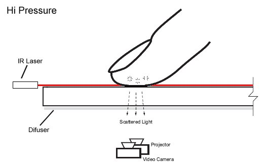
Construction
A full length discussion on the details of construction can be found elsewhere, but a simple explanation is as follows:
Step One
Separate the TV from the case, and the backlight from the LCD panel (They are both VERY fragile)
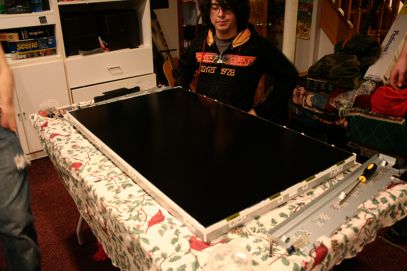
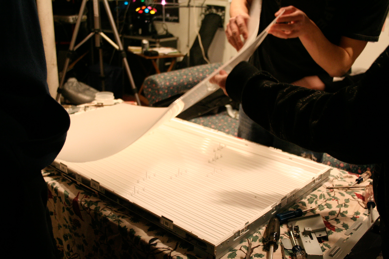
Step Two
Remove the IR Blocker from the webcams, replacing them with IR-Pass filters
Step Three
Assemble a box to put the LCD, backlight, lasers, and cameras
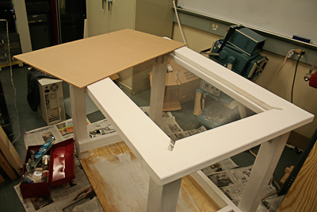
Step Four
Place Plexiglass on top of table, then place LCD on top of that. Mount Television components somewhere convenient, and place backlight near the bottom of the case (but leaving room for the computer)
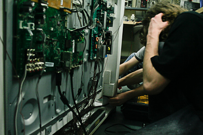
Step Five
Place computer at the bottom of the case
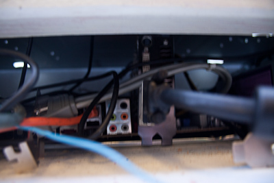
Step Six
Place cameras on top of backlight
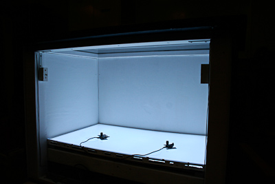
Step Seven
Mount lasers on top of the screen, just above the LCD
Step Eight
Finish construction of table
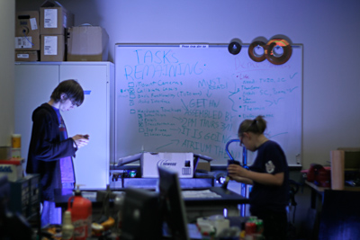
Step Nine
Install a
TUIO Tracker, configure cameras
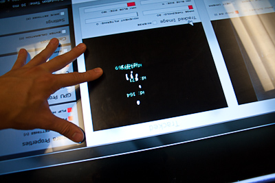
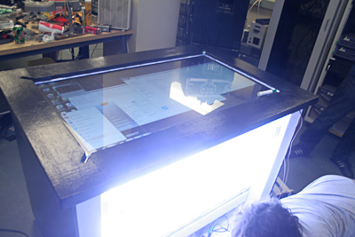
Step Ten
Write software on top of it!
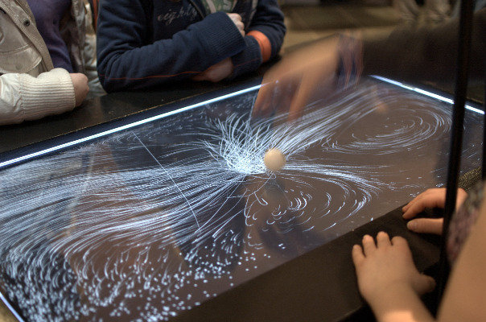